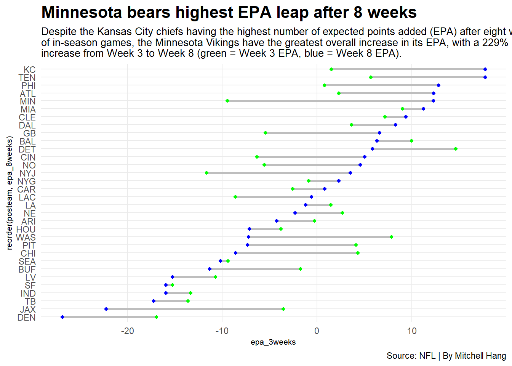

Code
library(tidyverse)
library(nflreadr)
library(ggalt)Mitchell Hang
October 31, 2023
This week, I am attempting to reverse-engineer the FiveThirtyEight article, “The Best Red Zone Teams Are The Ones That Get There,” published on September 29, 2022: https://fivethirtyeight.com/features/the-best-red-zone-teams-are-the-ones-that-get-there/
Here I am loading the necessary packages.
Here I am loading the play-by-play data.
Here is my code confirming that Miami had 20 plays inside the redzone during the first 3 weeks of the season and that the total EPA for those plays was 9.0.
# A tibble: 1 × 3
posteam redzone_plays epa
<chr> <int> <dbl>
1 MIA 20 9.00Here I am calculating Miami’s overall EPA for redzone plays during the 2022 season. We can see that Miami has scored over 140 plays within the redzone, and it has resulted in an overall EPA score of 12.3, a slight increase (about 36.6%) from the first three weeks.
# A tibble: 1 × 3
posteam redzone_plays epa
<chr> <int> <dbl>
1 MIA 147 12.3Here I am creating two separate dataframes for all NFL teams in 2022 with the total number of redzone plays and total EPA for both the first 3 weeks and through 8 weeks, all before joining them into one greater dataframe.
play_by_play_2022_3weeks <- play_by_play_2022 |>
filter(week <= 3, yardline_100 <= 20) |>
filter(play_type %in% qualified_plays) |>
drop_na(yardline_100) |>
group_by(posteam) |>
summarize(
redzone_plays_3weeks = n(),
epa_3weeks = sum(epa)
)
play_by_play_2022_8weeks <- play_by_play_2022 |>
filter(week <= 8, yardline_100 <= 20) |>
filter(play_type %in% qualified_plays) |>
drop_na(yardline_100) |>
group_by(posteam) |>
summarize(
redzone_plays_8weeks = n(),
epa_8weeks = sum(epa)
)
play_by_play_2022_3_and_8weeks <- play_by_play_2022_3weeks |> left_join(play_by_play_2022_8weeks)Joining with `by = join_by(posteam)`Here I am creaing a dumbbell plot showing the change in EPA for the major football teams, with the green dots representing Week 3 EPA and the blue dots representing Week 8 EPA. We can see that
Although the Kansas City Chiefs had the highest EPA after eight weeks, the team with the greatest overall change in EPA from three to eight weeks is the Minnesota Vikings, as there is a 229% increase from the Week 3 EPA to the Week 8 EPA (one value was in the negative while the other was in the positive). In addition, despite the Denver Broncos having the lowest EPA after eight week, the team with the worst overall change in EPA during the same period is the Jacksonville Jaguars, as there is a 524.2% decrease from the Week 3 EPA to the Week 8 EPA. If we check on the Miami Dolphins, we see that despite there not being much of a change between the EPA values for Week 3 and Week 8 compared to the other teams, the values are relatively high. It’s possible that the Miami Dolphins are consistent in their efforts of plays from Weeks 3 and 8, whereas the Minnesota Vikings were pushing a lot harder in their plays. Meanwhile, the Jacksonville Jaguars likely couldn’t boost their effort in plays (or at least keep it as consistent as possible) from Weeks 3 and 8, as other teams have often outsmarted and outplayed them during their games.
ggplot() +
geom_dumbbell(
data=play_by_play_2022_3_and_8weeks,
aes(y=reorder(posteam, epa_8weeks), x=epa_3weeks, xend=epa_8weeks),
linewidth = 1,
size=1,
color = "grey",
colour_x = "green",
colour_xend = "blue") +
theme_minimal() +
labs(title="Minnesota bears highest EPA leap after 8 weeks", subtitle="Despite the Kansas City chiefs having the highest number of expected points added (EPA) after eight weeks \nof in-season games, the Minnesota Vikings have the greatest overall increase in its EPA, with a 229% \nincrease from Week 3 to Week 8 (green = Week 3 EPA, blue = Week 8 EPA).", caption="Source: NFL | By Mitchell Hang") + theme_minimal() +
theme(
plot.title = element_text(size = 16, face = "bold"),
axis.title = element_text(size = 8),
plot.subtitle = element_text(size=10),
panel.grid.minor = element_blank()
)Warning in geom_dumbbell(data = play_by_play_2022_3_and_8weeks, aes(y =
reorder(posteam, : Ignoring unknown parameters: `linewidth`Warning: Using the `size` aesthetic with geom_segment was deprecated in ggplot2 3.4.0.
ℹ Please use the `linewidth` aesthetic instead.